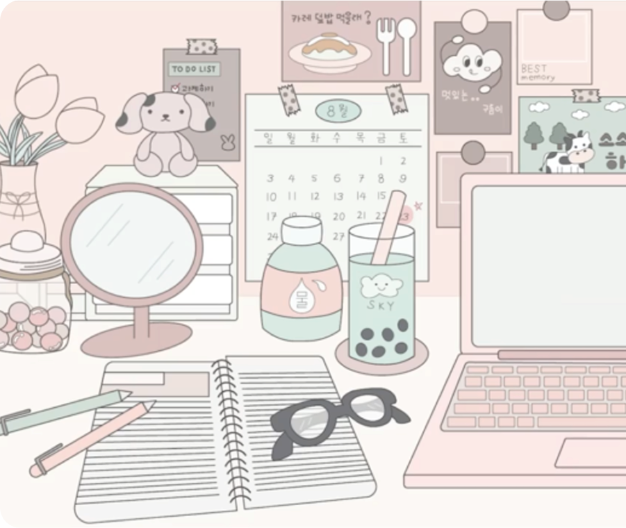
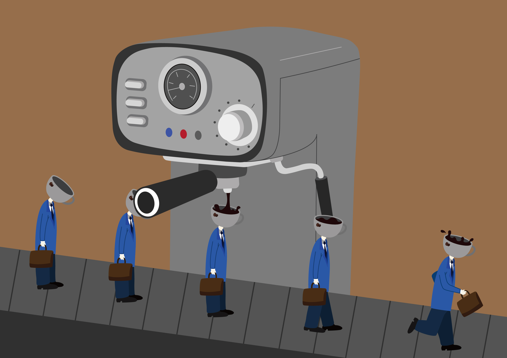
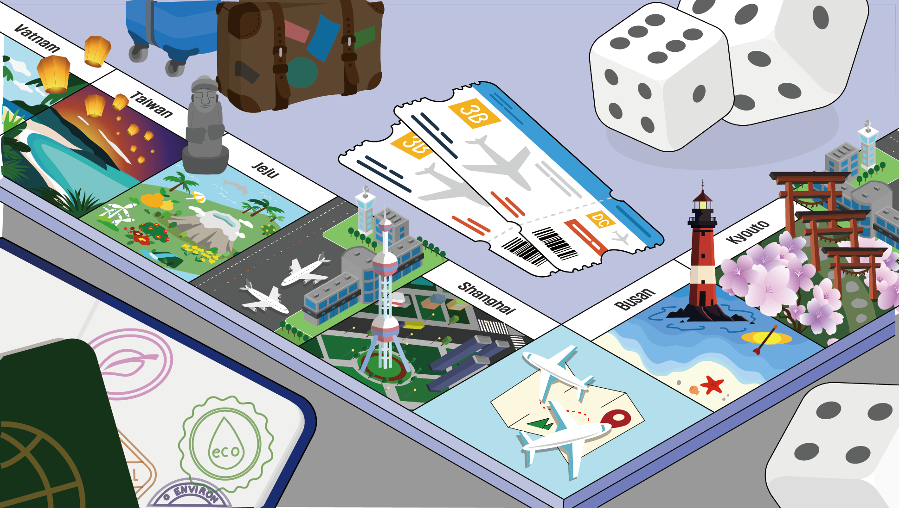
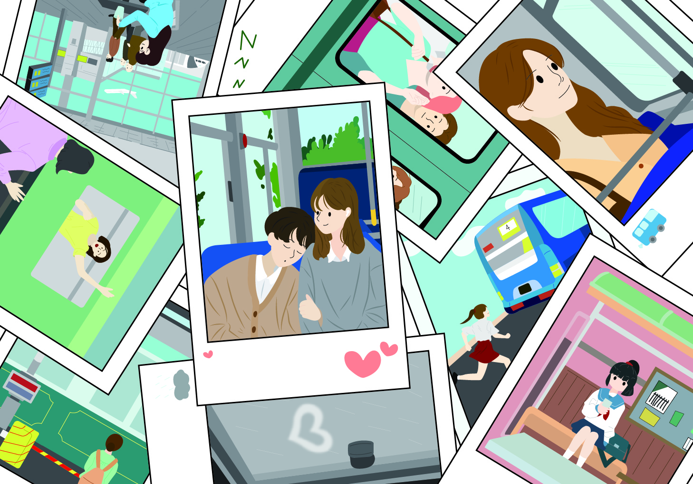
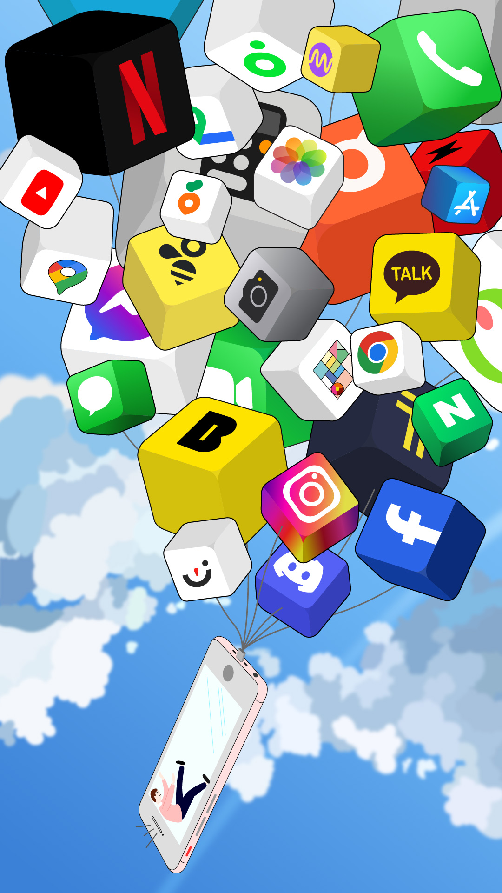
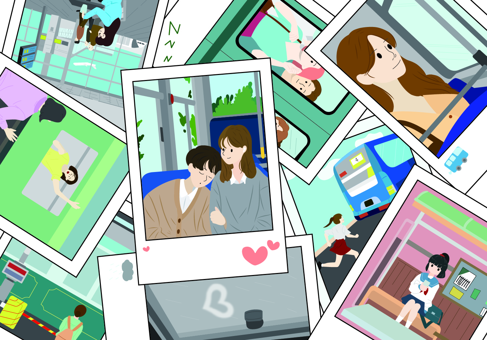
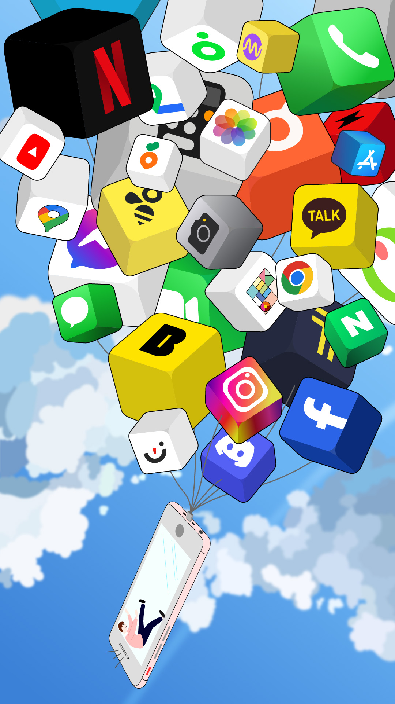
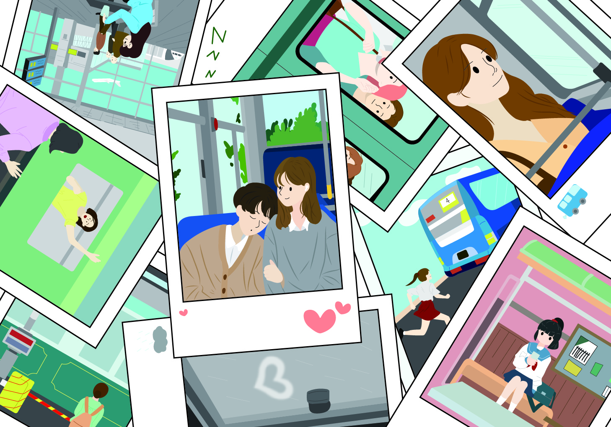
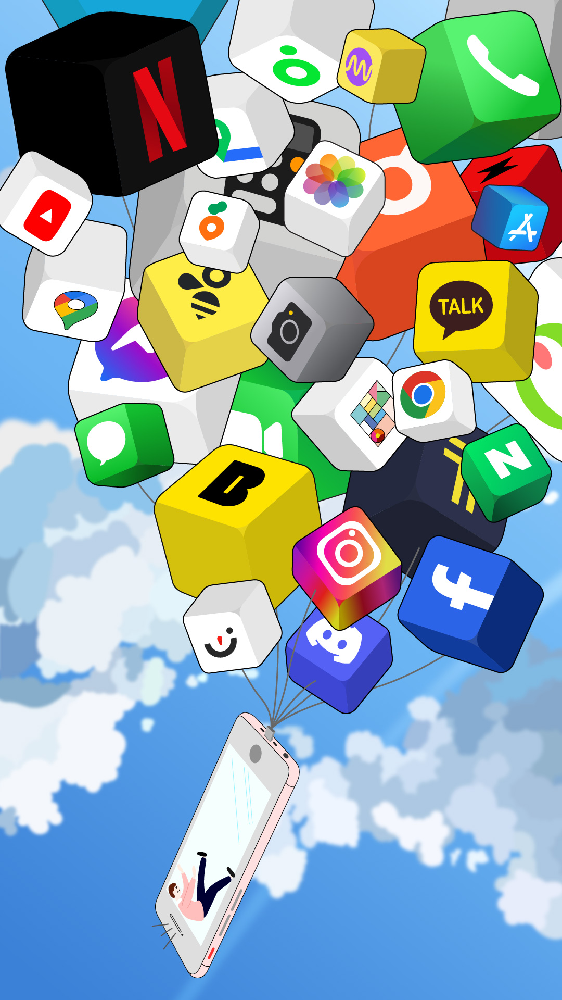
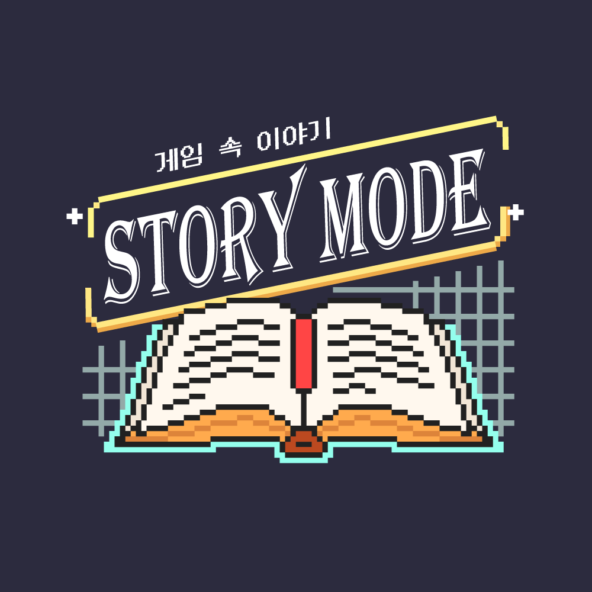

PORTFOLIO OF UNSEO JUNG

My Portfolio
Exploring planning, 3D, and video creation,
I’m learning to tell stories in my own voice.
With each step forward,
I aim to craft content that’s both thoughtful and complete.

I’m learning to tell stories in my own voice.
With each step forward,
I aim to craft content that’s both thoughtful and complete.

PROFILE
Academic Abdility
2023.01 부산 해운대여자고등학교 졸업
2023.03 ~ 경성대학교 미디어콘텐츠학과 재학
License
2013.03 아래한글 A급
2015.06 한컴타자(한글) A급
2016.03 한컴엑셀(한셀) A급
Career
2023.03 1학년 과대표
2024.03 2학년 과대표
2024.02 ~ 경성대학교 학내언론사 MCC기자
FILE
PROFILE
ILLUSTRATION


 





Map to Me
애니메이션 01:11
보물을 찾기 위한 여정을 통해 ‘나’라는 사람을 소개 영상 속 고양이는 곧 나 자신을
대변하는 캐릭터 보물 찾기의 과정은 내가 지금까지 걸어온 길, 좋아하는 것들, 중요하게
생각하는 가치들을 상징하며 여정을 통해 다양한 장소를 거치고 마지막에
‘나만의 보물’을 발견하는 구조로 구성
대변하는 캐릭터 보물 찾기의 과정은 내가 지금까지 걸어온 길, 좋아하는 것들, 중요하게
생각하는 가치들을 상징하며 여정을 통해 다양한 장소를 거치고 마지막에
‘나만의 보물’을 발견하는 구조로 구성


Cupid
타이포그래픽 00:58
FIFTY FIFTY의 노래 Cupid의 가사를 기반으로 음악의 흐름과 감정선을 시각적으로
표현한 타이포그래피 모션 영상 작업 각 가사의 분위기에 어울리는 색상과 그래픽 요소를
함께 활용해 단어 하나하나가 가진 감정을 시각화함
표현한 타이포그래피 모션 영상 작업 각 가사의 분위기에 어울리는 색상과 그래픽 요소를
함께 활용해 단어 하나하나가 가진 감정을 시각화함
글로벌 허브 도시로의 도약
단편 다큐멘터리 02:18
글로벌 허브도시 부산을 주제로 한 영상 다시 태어나도 살고 싶은 도시라는 메시지를
중심으로, 부산의 자연, 사람, 산업, 문화를 함께 담았음 감성과 정보가 조화를 이루는
구성으로, 도시의 현재와 미래 비전을 동시에 보여줌
중심으로, 부산의 자연, 사람, 산업, 문화를 함께 담았음 감성과 정보가 조화를 이루는
구성으로, 도시의 현재와 미래 비전을 동시에 보여줌
PODCASTS
스토리 모드 - 게임 속 스토리
유튜브 기반 비주얼 팟캐스트
게임스토리는 단순한 플레이 영상이 아닌, 게임의 내러티브에 집중한 비주얼 팟캐스트
각 회차마다 한 게임을 깊이 있게 분석하며, 세계관의 구조·인물의 서사·플레이어의 위치를 탐구
기획부터 대본, 연출, 영상 편집까지 직접 수행하며, 게임과 이야기의 접점을 끌어내고자 했음
각 회차마다 한 게임을 깊이 있게 분석하며, 세계관의 구조·인물의 서사·플레이어의 위치를 탐구
기획부터 대본, 연출, 영상 편집까지 직접 수행하며, 게임과 이야기의 접점을 끌어내고자 했음